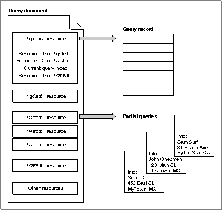
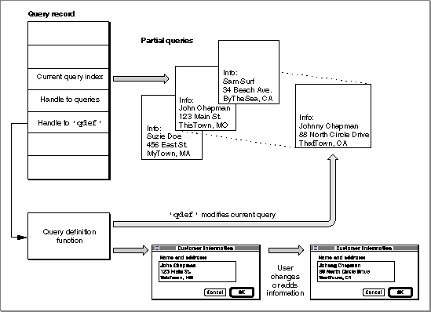

Contents of a Query Document
The query document must containA
- one
'qrsc'resource, as defined in the next section, "Query Records and Query Resources"- one
'STR#'resource that contains the name of the database extension to be used, plus any host, user name, password, and connection string needed for theDBInitfunction- one or more
'wstr'resources containing queries--that is, strings of commands and data that theDBSendfunction sends to the data server and that theDBExecfunction executes'wstr'resource consists of a 2-byte length field followed by a character string. (The w in'wstr'refers to the length word as opposed to the length byte used in an'STR 'resource.) Each'wstr'resource contains one query (or one query template, to be modified by the query definition function before it is sent to the data server). The'qrsc'resource includes an array that lists the resource ID numbers of all of the'wstr'resources in the query document and an index into the array that specifies which one of the'wstr'resources should be sent to the data server.In addition, the query document may contain
Figure 12-7 illustrates the relationship between the resources in a query document and the query record.
- a
'qdef'resource that contains a query definition function- any resources needed by the query definition function, such as
'DLOG'and'DITL'resources (which support dialog boxes)- resources to support an icon (to replace the default icon that the Finder uses for files of type
'qery'); see the chapter "Finder Interface" in Inside Macintosh: Macintosh Toolbox Essentials for more information on icon resources and for guidelines on designing iconsFigure 12-7 The relationship between resources in a query document and the query record

The query document in Figure 12-7 contains a
'qrsc'resource that specifies the resource ID of a'qdef'resource, the resource IDs of three'wstr'resources, and the resource ID of an'STR#'resource. It also specifies which of the three'wstr'resources represents the current query.The
DBGetNewQueryfunction creates the query record and partial queries from this information. Your application can use theDBStartQueryfunction to send a query to a data server. TheDBStartQueryfunction calls the query definition function referred to by the query record (if any). The query definition function can prompt the user for information and modify the query as needed. Figure 12-8 illustrates a query record that contains a handle to an array of queries, a handle to a query definition function, and an index that identifies the current query. The query definition function displays a dialog box and modifies the current query according to the user's input. Once the query definition function modifies the current query and returns, theDBStartQueryfunction sends the query to the data server.Figure 12-8 The relationship between a query definition function and queries
